09/09/2024 — “Thuốc cản quang không nói dối” …trừ khi nó nói dối. Chụp mạch vành âm tính, thật vậy chăng?
Bản dịch tiếng Việt của bài "“The dye don’t lie” …except when it does. Angiogram Negative, or is it?" – Dr. Smith’s ECG Blog. Giữ nguyên toàn bộ 15 hình ảnh và 7 video của bản gốc.
Tác giả: Willy Frick
Xem cuộc thảo luận hấp dẫn trên X do bài này khơi mào. Link ở bên dưới.
Một phụ nữ 40 tuổi đang nấu ăn ở nhà thì xuất hiện đau ngực. Bà uống một viên oxycodone và gọi đội cấp cứu ngoài viện (EMS). Điện tâm đồ lúc nhập viện của bà được trình bày dưới đây:
Điện tâm đồ 1

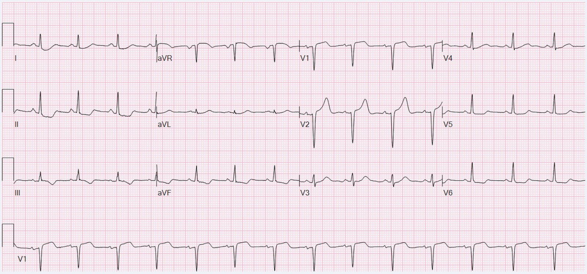
Bạn nghĩ gì?
Tôi gửi bản ghi này cho BS. Meyers và BS. Smith và câu trả lời là: “Tôi khá chắc chắn đây là OMI.”
Đây là kết luận của Queen kèm khả năng giải thích (explainability):

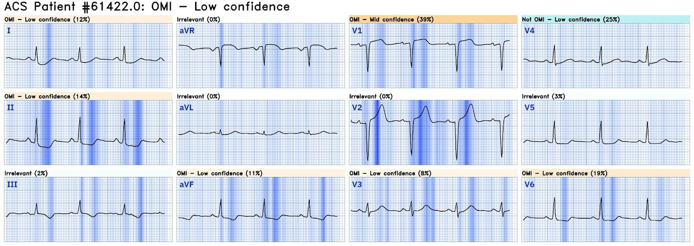
Queen thấy OMI với độ tin cậy thấp. Nhân tiện, phần giải thích ở trên có được khi dùng QOH trong môi trường bot Telegram. Trước đó tôi đã chạy điện tâm đồ này qua QOH trong môi trường ứng dụng PMcardio và Queen báo độ tin cậy trung bình, như trình bày dưới đây.

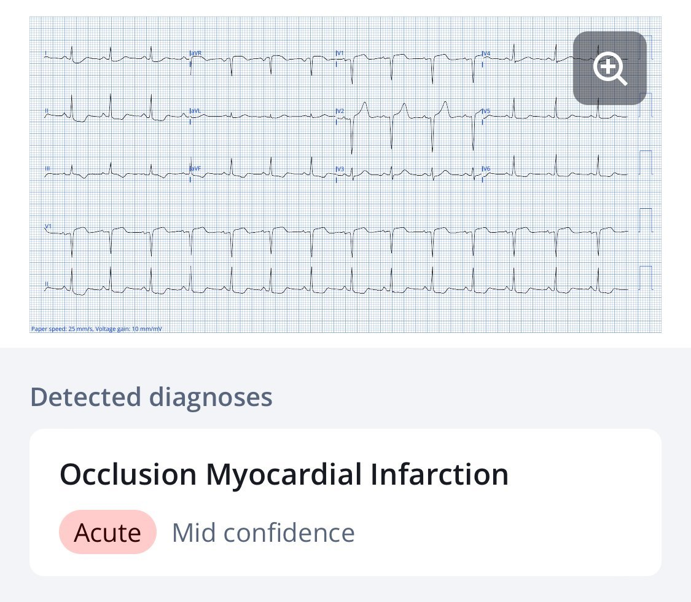
Mặc dù QOH hoàn toàn giống nhau ở cả hai môi trường, những khác biệt cực kỳ tinh tế trong quá trình số hóa giữa lần phân tích này với lần sau có thể làm độ tin cậy của Queen thay đổi đôi chút. Kết quả đầu ra của QOH là một số nằm giữa 0 và 1. Giá trị 0 nghĩa là “không phải OMI” với độ tin cậy cao, còn giá trị 1 nghĩa là “OMI” với độ tin cậy cao. Các ngưỡng cắt phân định OMI và không phải OMI cũng như các mức độ tin cậy được hiệu chỉnh để tối ưu độ nhạy và độ đặc hiệu theo đường cong đặc trưng hoạt động của bộ thu nhận (ROC).
Queen of Hearts phiên bản 2 đang được tích cực phát triển, và được huấn luyện trên một bộ dữ liệu lớn hơn nhiều so với phiên bản 1. Hình dưới đây cho thấy kết quả đầu ra của QOH phiên bản 1 và QOH phiên bản 2. Có thể thấy phiên bản 2 cho con số cao hơn phiên bản 1, tức là Queen thấy điện tâm đồ này giống OMI hơn so với phiên bản 1.
Phiên bản 2 của Queen of Hearts

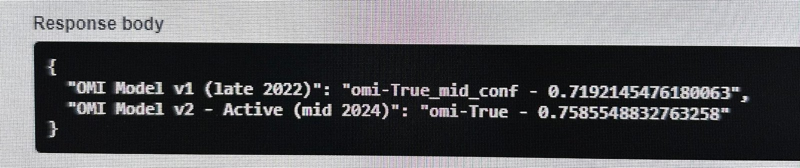
Queen tự tin hơn so với Phiên bản 1
Bấm vào đây để đăng ký quyền truy cập Queen of Hearts
Quay lại ca bệnh…
Điện tâm đồ được đọc là có ST chênh xuống (STD) lan tỏa kèm ST chênh lên (STE) ở aVR. Ghi chép không nhắc gì tới V1 và V2. Thực ra, cả V1 và V2 đều có ST chênh lên, và riêng V2 có sóng T tối cấp. Kết hợp với ST chênh xuống ở các chuyển đạo trước tim phía bên, đây là hình ảnh xoáy trước tim (precordial swirl), và do đó chẩn đoán OMI LAD ở đoạn gần trước nhánh xuyên vách lớn thứ nhất.
Dù QOH không có điện tâm đồ cũ, chúng ta thì có. Bản ghi đó được trình bày dưới đây:
Điện tâm đồ cũ

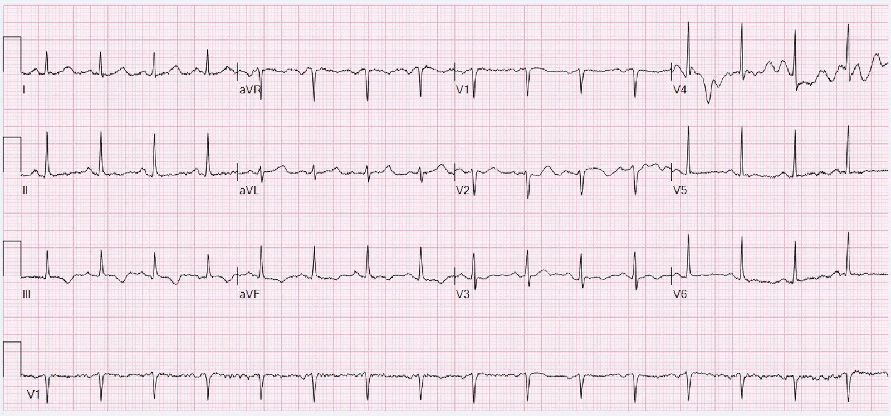
So với điện tâm đồ cũ, giờ đây chúng ta có thể hoàn toàn tự tin rằng sóng T ở V2 đúng là tối cấp, và điện tâm đồ hiện tại cho thấy OMI LAD.
hscTnI ban đầu là 10 ng/L (tham chiếu <14). Bệnh nhân được cho là có khả năng thấp bị hội chứng vành cấp (ACS), và khoa tim mạch đề nghị làm lại troponin, xét nghiệm ma túy trong nước tiểu và siêu âm tim. Không có đề nghị ghi lại điện tâm đồ. Tôi tin chắc rằng không bao giờ nên theo dõi diễn biến troponin mà không đồng thời theo dõi diễn biến điện tâm đồ. Troponin cho bạn biết điều đã xảy ra từ nhiều giờ trước, điện tâm đồ cho bạn biết điều đang xảy ra ngay lúc này.
hsTnI làm lại hai giờ sau lần đầu tăng từ 10 lên 8,512 ng/L. Đến lúc đó, khoa tim mạch quyết định điều trị theo hướng ACS. Siêu âm tim tại giường cho thấy giảm động thành trước từ đoạn giữa đến đoạn xa và mỏm. Hình chụp mạch được trình bày dưới đây.
Dưới đây là góc chụp chếch trước trái của RCA kèm chếch đầu một chút (“LAO crani”).
Đây là một ảnh tĩnh tiêu biểu cho thấy RCA và chỗ chia đôi ở đoạn xa thành PDA và một nhánh sau bên phải (RPL). Cơ hoành cho bạn biết đây là góc chụp chếch đầu (tức là bạn đang nhìn từ trên xuống).

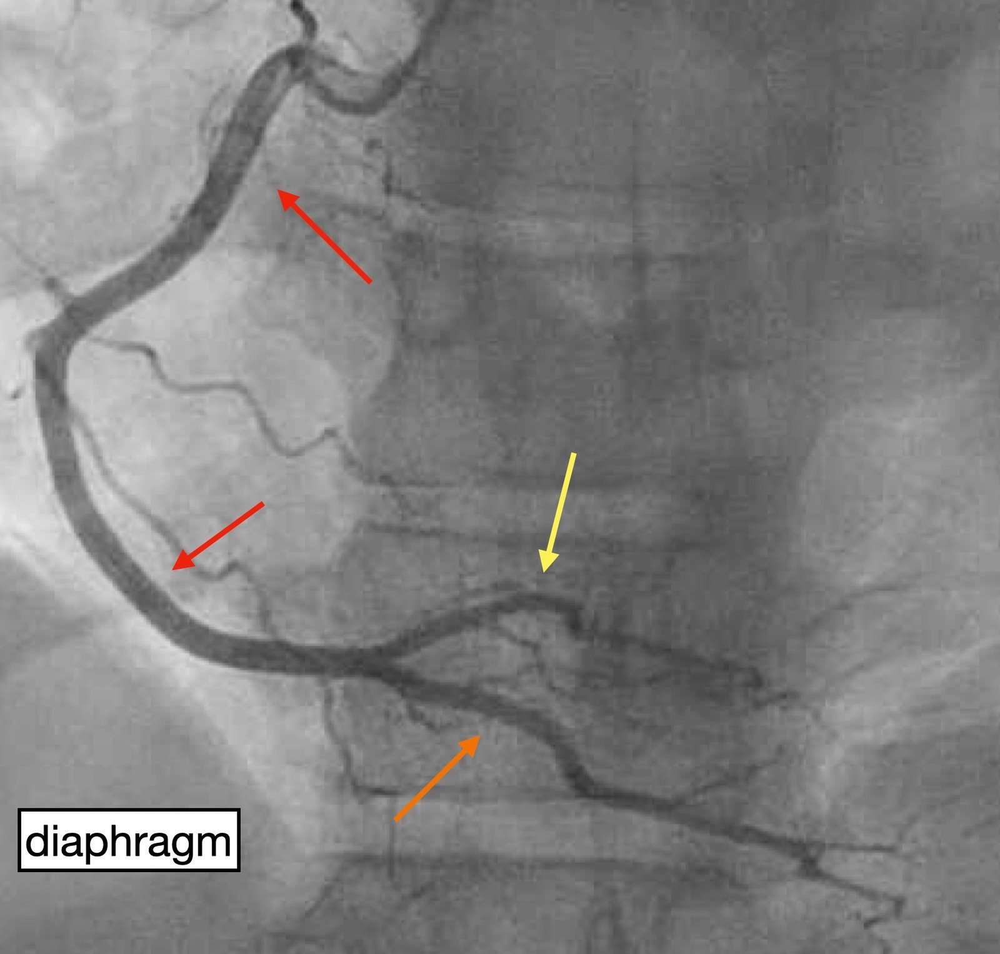
Tiếp theo là góc chụp RAO (chếch trước phải) chếch đầu.
Dưới đây là một ảnh tĩnh tiêu biểu cho thấy LAD và các nhánh xuyên vách. Các nhánh chéo chồng lên nhau và không hiện rõ ở góc chụp này. Dù góc chụp này không nhằm mục đích đó, LCx vẫn hiện khá rõ. Cơ hoành một lần nữa cho bạn biết đây là góc chụp chếch đầu.

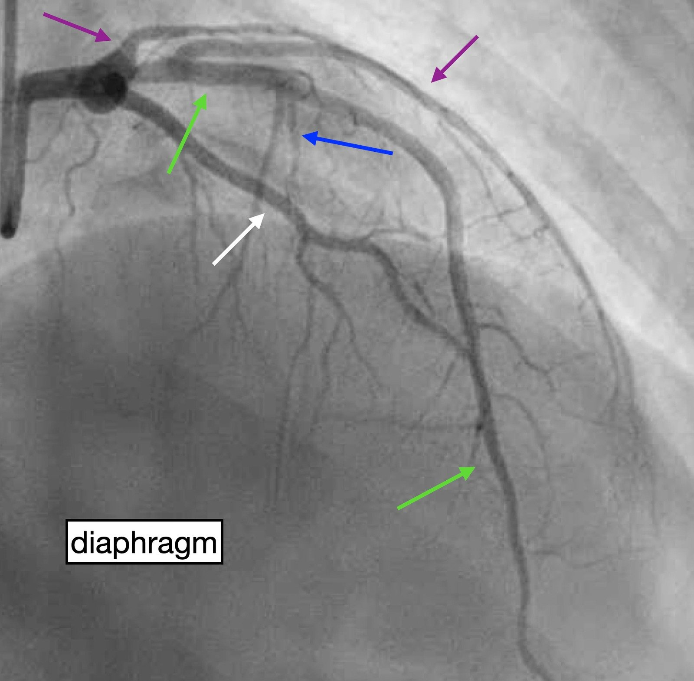
Cho tới giờ, chúng ta chưa thấy gì giải thích được OMI LAD, nhưng hãy tiếp tục xem. Góc chụp tiếp theo là trước-sau (“AP”) chếch đầu, thường dùng để thấy LAD và chỗ chia nhánh chéo.
Đây là một ảnh tĩnh tiêu biểu cho thấy LAD và các nhánh xuyên vách. Nhánh chéo thứ nhất và thứ hai đều là những mạch khá lớn, nhưng tiếc là ở đây chúng chồng lên nhau, nên không hiện rõ lắm. LCx không hiện rõ (và góc chụp này cũng không nhằm để thấy nó).

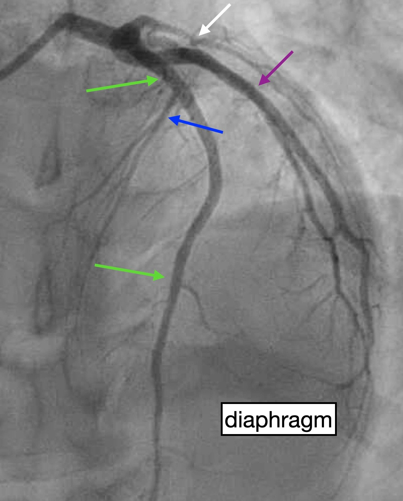
Một lần nữa, cho tới giờ chưa có gì đáng kể. Chắc chắn có dòng chảy TIMI 3 ở mọi nơi. Góc chụp tiếp theo là LAO chếch chân (đôi khi gọi là “góc nhìn con nhện” (spider view)). Góc chụp này tốt nhất cho thân chung động mạch vành trái và đoạn gần của LAD, LCx cùng các nhánh.
Trong ảnh tĩnh tiêu biểu này, chúng ta thấy LAD, các nhánh chéo và LCx. Tất cả các mạch đoạn gần đều có vẻ thông thoáng rộng rãi, và các nhánh xuyên vách không hiện rõ (do chồng lên LAD). Không thấy cơ hoành vì đây là góc chụp chếch chân.

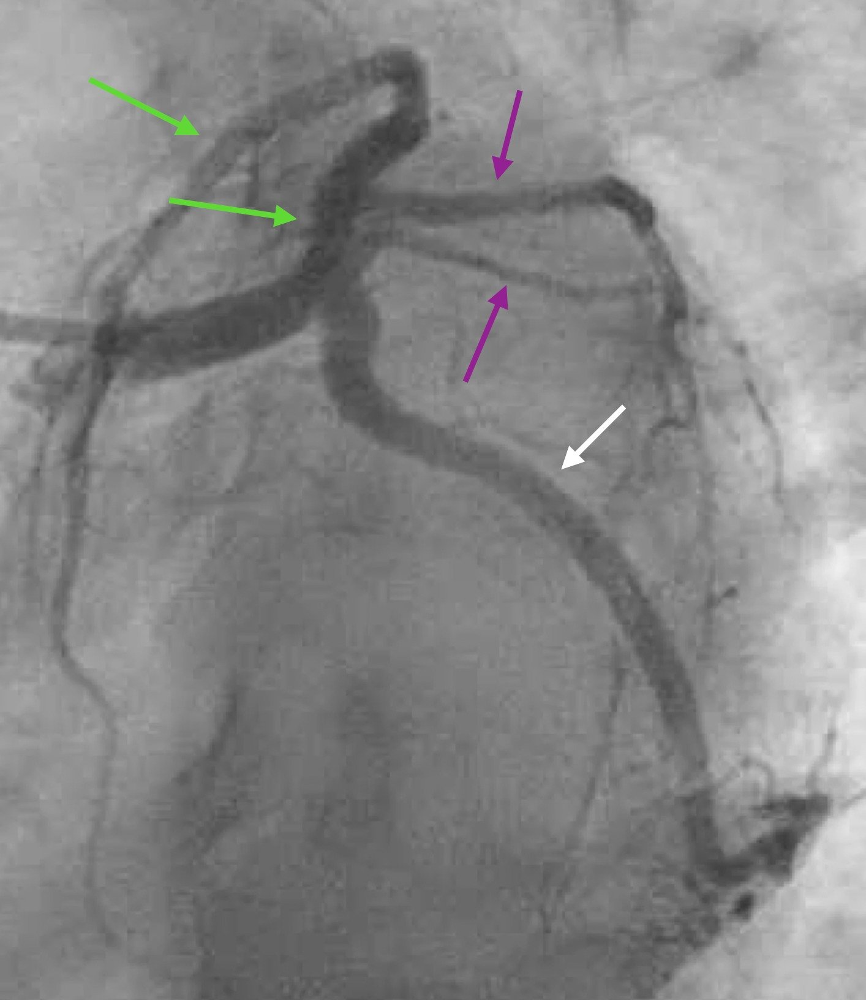
Góc chụp cuối cùng là RAO chếch chân, tốt cho đoạn gần LAD và LCx.
Và đây là một ảnh tĩnh tiêu biểu cho thấy LAD, các nhánh chéo, lỗ xuất phát của các nhánh xuyên vách, và LCx.

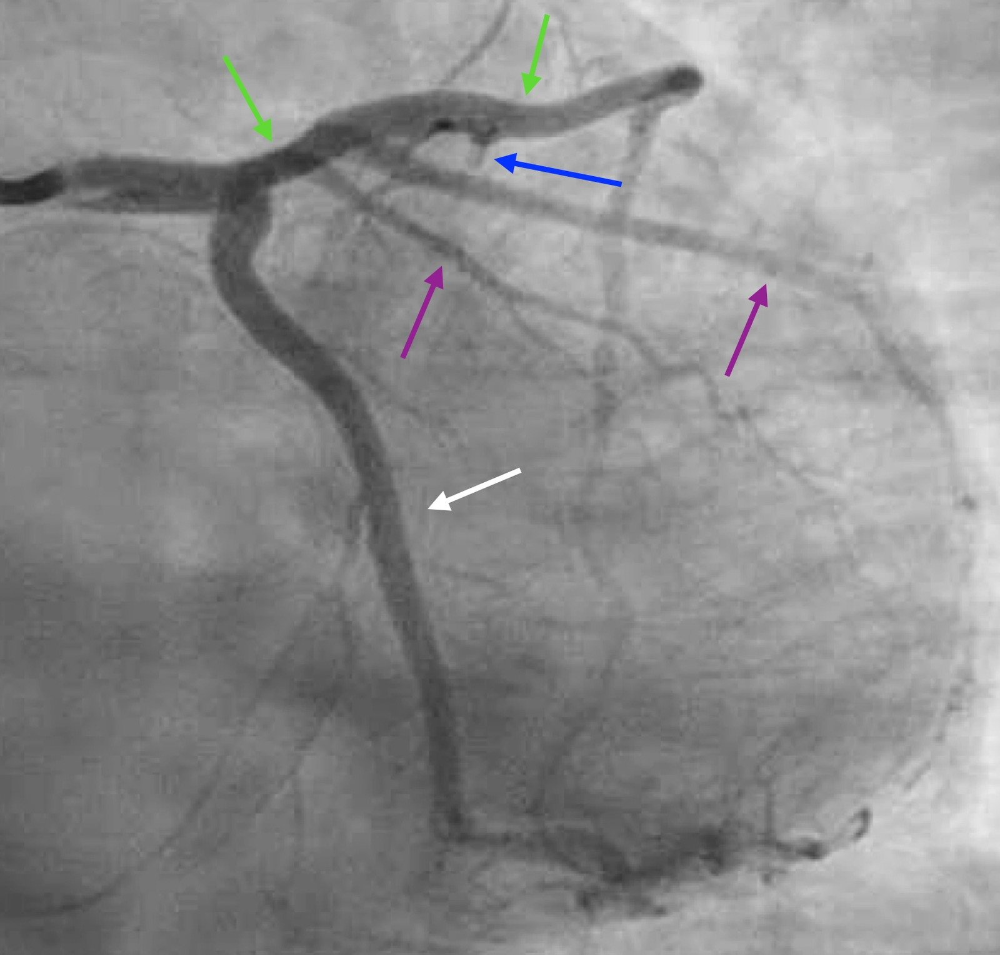
Với hầu hết mọi người, đây có lẽ trông như một hình chụp mạch hoàn toàn bình thường. Và nó có thể dễ dàng bị nhầm như vậy. Những người đọc tinh mắt có thể nhận thấy đoạn gần LAD trông hơi lõm khoét vào ở góc chụp trên, ngay tại đầu mũi tên xanh lục phía trên bên trái. Bác sĩ tim mạch gọi đây là hẹp 20%.
Ở phần lớn các phòng thông tim (cath lab), người thực hiện có lẽ đã kết thúc ca tại thời điểm này. Bạn có thể dễ dàng hình dung bệnh nhân này nhận một trong vài chẩn đoán — co thắt mạch, MINOCA, viêm màng ngoài tim, hoặc thậm chí không có chẩn đoán nào ngoài “bệnh động mạch vành không tắc nghẽn.”
Bình luận của Smith: một tỷ lệ rất cao MINOCA là mảng xơ vữa nứt vỡ kèm huyết khối đã ly giải. Mảng xơ vữa đó có nguy cơ hình thành huyết khối trở lại. Cần nhớ rằng phần lớn các mảng xơ vữa bị nứt vỡ là không gây tắc nghẽn trước khi chúng loét và hình thành huyết khối. Nếu huyết khối ly giải hoàn toàn, có thể không còn bằng chứng nào thấy được trên phim chụp mạch vành. Chụp mạch vành là một “phim chụp lòng mạch” (lumenogram) và không “nhìn thấy” mảng xơ vữa ngoài lòng mạch. Phần lớn mảng xơ vữa nằm ngoài lòng mạch!! Vì vậy có thể cần đến các phương tiện khác.
May mắn là người thực hiện này đã dùng siêu âm trong lòng mạch (IVUS). (Một lựa chọn khác là dùng chụp cắt lớp quang học (OCT) để tạo ảnh mạch vành). Kết quả cho thấy “mạch hoàn toàn bình thường suốt dọc LAD, trừ ở đoạn gần/lỗ xuất phát LAD có một mảng xơ vữa nứt vỡ.” Với điều này trong đầu, điện tâm đồ 1 có xoáy trước tim là hoàn toàn hợp lý. Thực tế, đã có tắc thoáng qua LAD ở đoạn gần trước các nhánh xuyên vách.
Tại thời điểm làm IVUS, không có huyết khối. Biên bản mô tả mảng xơ vữa lan vào đoạn xa thân chung động mạch vành trái. Người thực hiện ghi nhận đã cân nhắc kỹ lưỡng nguy cơ và lợi ích của việc đặt stent. Về mặt kỹ thuật, vùng hạ stent rất hẹp, và nếu đặt trượt có thể “nhốt” (jailing) LCx, điều lý tưởng là nên tránh. Hơn nữa, người thực hiện lo ngại về sự tuân thủ liệu pháp kháng tiểu cầu kép của bệnh nhân, mà nếu không tuân thủ thì bà sẽ có nguy cơ bị huyết khối stent thảm khốc. Vì lý do này, và vì bà đã tái thông tự phát rất tốt, họ quyết định thử điều trị nội khoa với kế hoạch thông tim lại ngay nếu bà có bất kỳ triệu chứng nào tái phát.
hsTnI làm lại ngay sau thông tim là 36,029 ng/L. Điện tâm đồ dưới đây cho thấy rõ tái tưới máu LAD.

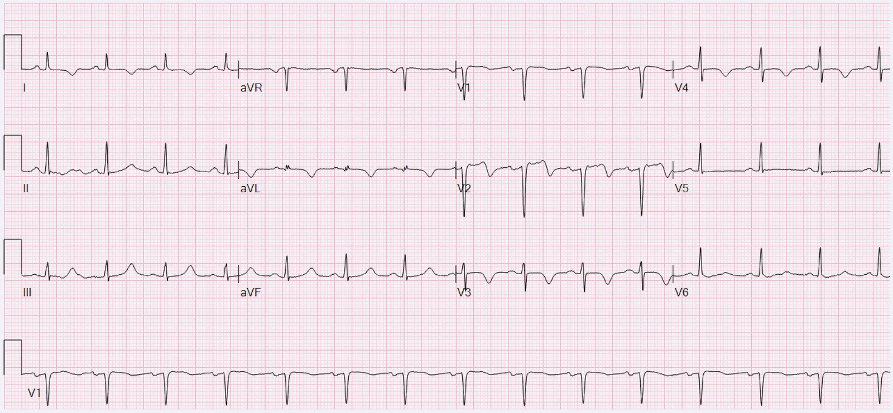
Không may, vài giờ sau bệnh nhân than đau ngực tái phát. Điện tâm đồ ghi lại cho thấy tái tưới máu tiến triển mà không có bằng chứng nào của tắc lại.

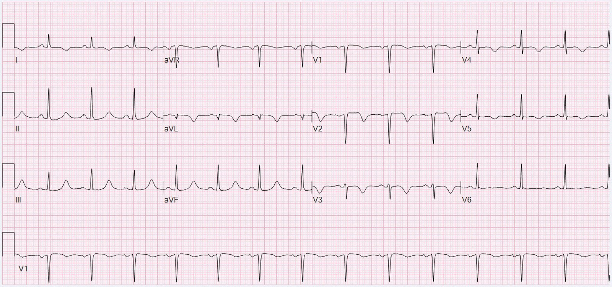
Tuy nhiên, xét bối cảnh, bà được đưa trở lại chụp mạch ngay và được đặt stent ở đoạn gần LAD. Một vài hình siêu âm tim chọn lọc cho thấy giảm động nặng, lan rộng ở vùng phân bố của LAD.
Những điểm cần học:
- Động mạch vành không tắc nghẽn, gần như bình thường không loại trừ được OMI.
- Troponin cho bạn biết điều đã xảy ra từ nhiều giờ trước, điện tâm đồ cho bạn biết điều đang xảy ra lúc này.
- Hãy nhận ra xoáy trước tim, một dấu hiệu rất quan trọng để chẩn đoán OMI đoạn gần LAD kín đáo.
Ca này đã khơi gợi cuộc thảo luận thú vị trên Twitter.
https://x.com/GreggWStone/status/1834315452459155656 (chuỗi thảo luận trên X của Gregg W. Stone về ca này)

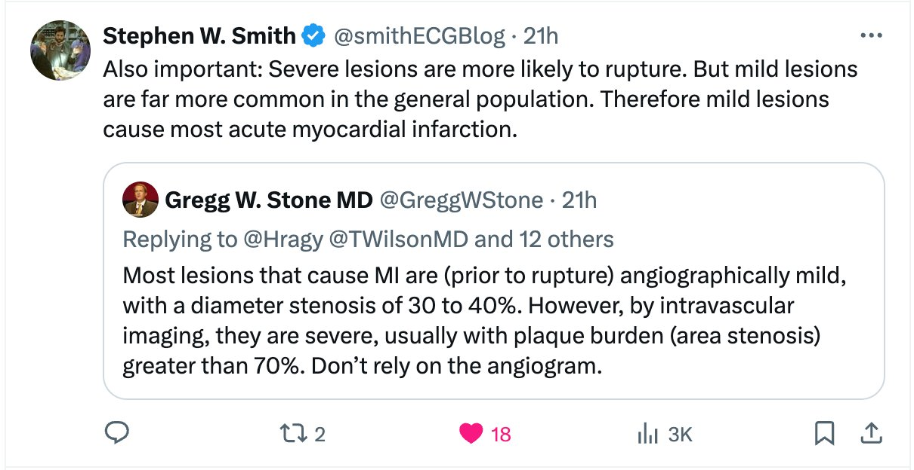

==================================
BÌNH LUẬN CỦA TÔI, bởi KEN GRAUER, MD (9/9/2024):
==================================
Bài trình bày xuất sắc hôm nay của BS. Frick là một ví dụ tuyệt vời về việc đọc điện tâm đồ thành thạo có thể giúp bác sĩ can thiệp như thế nào. Việc biết (như BS. Frick chỉ ra) rằng điện tâm đồ ban đầu trong ca hôm nay gợi ý mạnh “Xoáy” trước tim (do đó chẩn đoán OMI LAD đoạn gần) — đã thúc đẩy bác sĩ can thiệp tiếp tục xem xét vùng được dự đoán là vị trí của động mạch “thủ phạm” , đồng thời ý thức được sự cần thiết của IVUS (siêu âm trong lòng mạch — IntraVascular UltraSound) để đưa ra chẩn đoán cuối cùng khi đã thấy dấu hiệu kín đáo trên phim thông tim là đoạn gần LAD trông lõm khoét vào.
- Dù QOH giỏi đến đâu trong việc nhận ra OMI cấp (và hiệu năng còn được kỳ vọng tốt hơn nữa khi Phiên bản 2 ra mắt) — độ tin cậy của QOH khi đánh giá OMI cấp ở điện tâm đồ ban đầu hôm nay là chưa đến mức cao.
- Tôi cho rằng việc phối hợp đánh giá bản ghi ban đầu này bằng QOH, cùng với đánh giá điện tâm đồ trên lâm sàng bởi một người đọc thành thạo — lẽ ra đã có thể (lẽ ra phải) làm tăng độ tin cậy cho chẩn đoán OMI cấp ngay cả trước khi tìm được điện tâm đồ cũ của bệnh nhân này.
Để rõ ràng, trong Hình 1 — tôi đã đánh nhãn điện tâm đồ ban đầu và bản ghi trước đó.

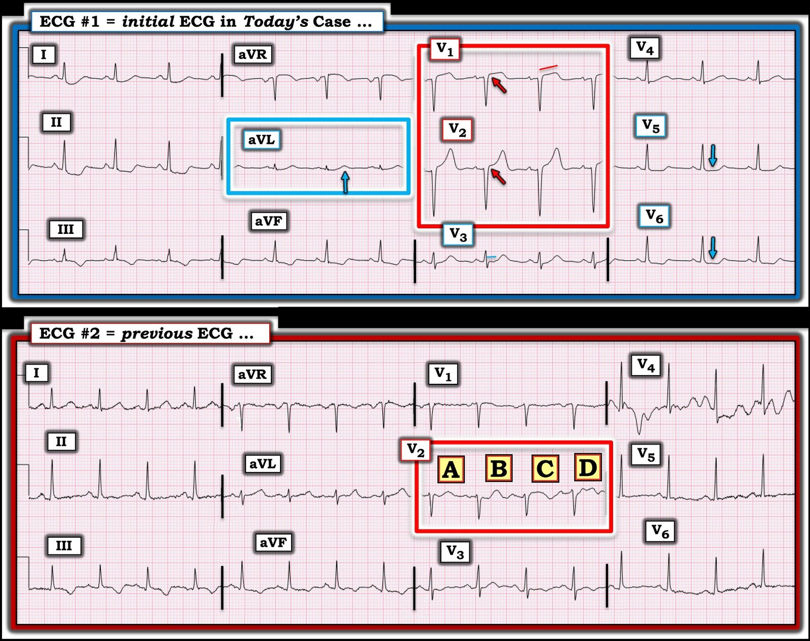
============================
LƯU Ý: Để ôn lại 20 ca “Xoáy” so với các ca “Trông giống” Xoáy — Hãy xem bài ngày 15 tháng Mười năm 2022 trên Dr. Smith’s ECG Blog. Ở cuối trang của bài ngày 15 tháng Mười này — tôi tóm tắt trong phần Bình luận của tôi, một loạt mẹo giúp nhận ra “Xoáy” trước tim .
============================
“Quan điểm” của tôi về CA hôm nay:
Bệnh sử trong ca hôm nay lập tức xếp bệnh nhân này vào nhóm nguy cơ cao hơn đối với một biến cố cấp — ở chỗ người phụ nữ 40 tuổi này đột ngột xuất hiện CP (đau ngực — Chest Pain) mới đủ nặng để gọi đội cấp cứu ngoài viện.
- Đánh giá ban đầu điện tâm đồ #1 được thực hiện khi chưa có điện tâm đồ cũ để đối chiếu. Điện tâm đồ ban đầu này cho thấy nhịp xoang — các khoảng và trục bình thường — và không có lớn buồng tim.
- Về Thay đổi Q–R–S–T — phức bộ QS ở chuyển đạo V1 không nhất thiết bất thường vì đã xuất hiện một sóng r rất nhỏ ở V2 — kèm tăng tiến sóng R bình thường (tức là, đã chuyển sang sóng R chiếm ưu thế ngay từ chuyển đạo V3).
Bất thường ST-sóng T — có mặt ở hầu như mọi chuyển đạo, và cái khó là cho đến khi tìm được bản ghi cũ để so sánh — rất khó biết nên tập trung vào những chuyển đạo nào.
- Như BS. Frick — sự chú ý của tôi ở điện tâm đồ #1 lập tức bị thu hút bởi 2 chuyển đạo trong hình chữ nhật MÀU ĐỎ . Ở cả chuyển đạo V1 và chuyển đạo V2 — các mũi tên ĐỎ làm nổi bật ST chênh lên ở điểm J nhiều hơn mức nên thấy ở các chuyển đạo này. Ủng hộ rằng ST chênh lên này có khả năng là cấp tính ở người phụ nữ có đau ngực mới này — là hình ảnh ST thẳng đuỗn bất thường ở chuyển đạo V1 — và sóng T cao không tương xứng (tối cấp) ở chuyển đạo V2, lớn hơn nhiều so với mức người ta có thể chờ đợi khi sóng S ở chuyển đạo này chỉ sâu vừa phải.
- Việc các sóng ST-T mô tả ở trên tại chuyển đạo V1,V2 rõ ràng là bất thường — được ủng hộ bởi phát hiện bất ngờ là ST thẳng đuỗn kèm ST chênh xuống nhẹ ở chuyển đạo V3 (trong khi bình thường phải có ST chênh lên nhẹ dốc lên ở chuyển đạo V3) kế bên.
- Chuyển đạo “ưu tiên” của tôi để xác nhận các thay đổi ST-T đáng ngờ ở chuyển đạo trước — là chuyển đạo aVL. Trong khi tôi không chắc ST chênh xuống và sóng T đảo ngược ở các chuyển đạo I,II,III,aVF có phải cấp tính hay không — thì với các sóng ST-T tối cấp nhiều khả năng ở chuyển đạo V1,V2 — tôi đọc sóng T dương “đầy đặn” không tương xứng ở chuyển đạo aVL (xét kích thước rất nhỏ của QRS ở chuyển đạo này) cũng là tối cấp.
- Như đã nhấn mạnh trong phần Bình luận của tôi ở cuối bài ngày 15 tháng Mười năm 2022 — sau khi đã xác lập ST chênh lên bất thường ở chuyển đạo V1,V2 — phát hiện cuối cùng để nhận ra Xoáy trước tim — là, ở bệnh nhân không có LVH — nhận ra hình dạng tương đối dẹt của đoạn ST chênh xuống ít nhất ở chuyển đạo V6, nếu không phải cả ở chuyển đạo V5 (các mũi tên XANH LAM ở các chuyển đạo này).
Điện tâm đồ trước đó:
Như BS. Frick — việc so sánh trong Hình 1 giữa điện tâm đồ ban đầu hôm nay với bản ghi trước đó tìm được đã xác nhận rằng các dấu hiệu điện tâm đồ ở chuyển đạo ngực chẩn đoán OMI LAD với “Xoáy” là mới!
- Dù vậy — Trong 4 phức bộ nằm trong hình chữ nhật MÀU ĐỎ ở điện tâm đồ #2, phức bộ nào là đúng? Sóng ST-T ở “C” có vẻ đáng lo nhất — và “A” ít đáng lo nhất — nhưng không có cách nào biết được từ điện tâm đồ #2 nên dùng phức bộ nào.
- Dù không quan trọng cho việc đánh giá ca hôm nay (vì rõ ràng ngay cả khi không đánh giá sóng ST-T ở các chuyển đạo V2 và V4 đầy nhiễu thì các thay đổi ở điện tâm đồ #1 vẫn là mới) — điểm cần nhấn mạnh là khi đánh giá bệnh nhân nghi OMI, điện tâm đồ cần được ghi lại NẾU các chuyển đạo quan trọng trở nên không đọc được do nhiễu (như trường hợp bản ghi trước đó của bệnh nhân hôm nay).
Thông điệp “cần–nhớ”: Chẩn đoán OMI LAD cấp với “Xoáy” trong ca hôm nay trở nên rõ ràng ngay khi tìm được điện tâm đồ trước đó.
- Dù vậy, với bệnh sử đau ngực nặng mới khởi phát — chỉ riêng việc đánh giá điện tâm đồ ban đầu (như mô tả ở trên) — lẽ ra đã đủ để đưa ra chẩn đoán này với độ tin cậy đủ để biết có chỉ định thông tim sớm.
- Như BS. Frick — mọi nghi ngờ về sự cần thiết phải thông tim sớm lẽ ra đã có thể nhanh chóng được giải tỏa chỉ đơn giản bằng cách ghi lại điện tâm đồ trong vòng ~15-20 phút sau khi ghi bản đầu tiên.